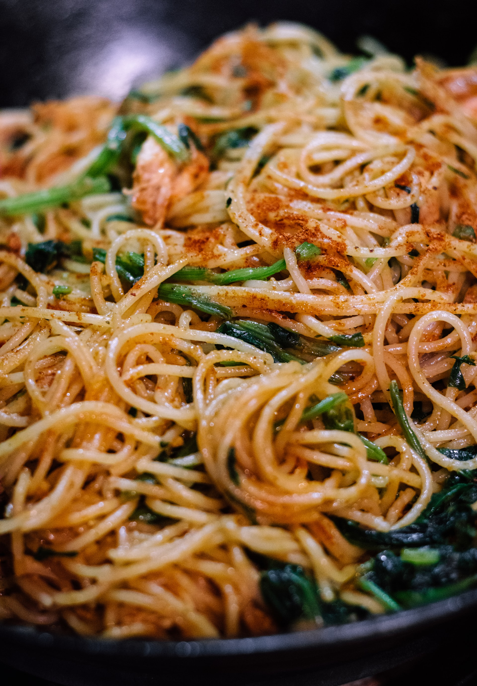

Tallarines

Para cocinar tallarines necesitás los siguientes ingredientes:
- Paquete de tallarines
- Salsa de tomate
- Queso
Para cocinar este delicioso platillo
tenés que seguir los siguientes pasos:
- Pone en agua lios tallarines.
- LLevar a fuego bajo.
- Cuando los tallarines estén cocidos, emplatar.
- Aderezar con salsa de tomates y queso al gusto.
Et voilá! Ya tenemos listo este manjar de dioses.